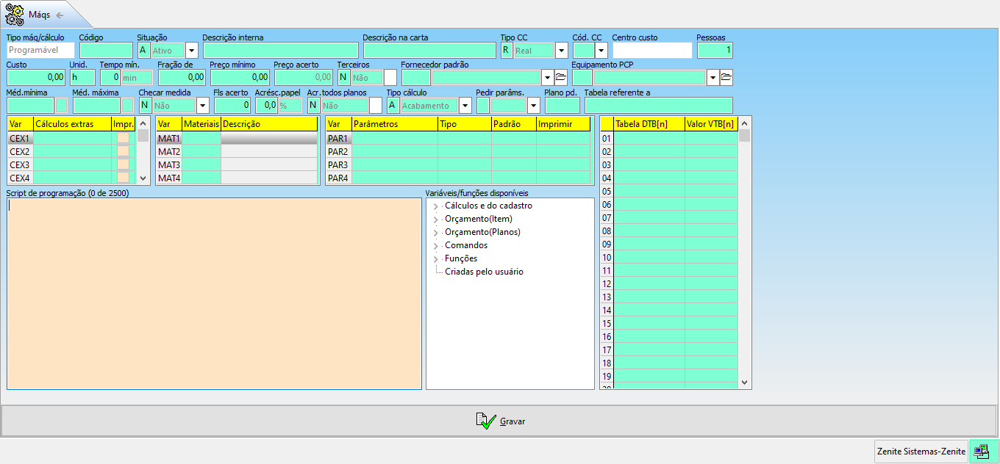

impressoras, máqs, calcs: Serão cadastrados todas as impressoras e máquinas utilizadas no processo de produção da empresa, além dos cálculos programáveis. Os processos serão divididos em pré-impressao, impressão e acabamento. A aba de acabamentos recebe os cálculos programáveis também.
Alceadeira: O equipamento deve ser vinculado à um centro de custo ou deve ser selecionado o checkbox de terceiros.
Tempo min: Indica um tempo mínimo a ser usado nos orçamentos.
Fls acerto: Divide o formato das folhas pelo formato da impressão para saber quantas folhas serão acrescentadas.
Acres. papel: Indica uma porcentagem de acréscimo de papel.
Tipo alceadeira: Pode ser coladeira ou grampeadeira
Max. cad/ent: Indica o número máximo de cadernos por entrada. Se o trabalho tiver mais que o máximo de cadernos suportados pelo equipamento, a produtividade deve sempre ser considerada a menor possível.
Duplo paralelo: É uma repetição de impressões para páginas em sequências, uma espécie de TR para impressões com miolo.
Dobradeira
Dobradeira: O equipamento deve ser vinculado à um centro de custo ou deve ser selecionado o checkbox de terceiros.
Pedir parâms: Indica se será pedido algum parâmetro ao calcular o orçamento
Cria cadernos para intercalação(dobra em cruz automática para livros e revistas): Deve ser marcada para o cálcuo ser feito automaticamente.
Checar medida: ???
Guilhotina
Guilhotina: O equipamento deve ser vinculado à um centro de custo ou deve ser selecionado o checkbox de terceiros.
Tipo de corte: Geral = será usado na pré-impressão e nos cortes finais. Caso seja cadastrada uma guilhotina só para pré-impressão, deverá ser cadastrada outra para o acabamento, e vice-versa (caso o trabalho necessite de duas etapas de corte).
Copiadora
Copiadora: O equipamento deve ser vinculado à um centro de custo ou deve ser selecionado o checkbox de terceiros.
Fornecedor padrão: Caso o processo seja terceirizado, deverá ser indicado o fornecedor responsável pelo serviço.
Reversão: Indica se o equipamento possui reversão, ou seja, se ele vira a página automaticamente.
Pinça: Indica a área que a pinça irá manusear o substrato.
Chapado: Indica a porcentagem da área de mancha que receberá tinta. Normalmente, quando o trabalho tem mais de 70% da área com tinta, ele é considerado chapado.
Min.cor / Max.cor: Define o mínimo e o máximo de cores que poderão ser usado no equipamento.
grade Caso as cores do trabalho não estejam dentro do escopo estipulado, a máquina não poderá nem mesmo ser forçada.
Min.auto / Max.auto: Define o mínimo e o máximo de cores que serão sugeridos pelo sistema ao fazer o orçamento.
Preço/cópia: É um valor fixo por impressão da copiadora. Caso o trabalho tenha um aldo colorido e outro preto e branco, será feito uma média dos valor cobrados.
grade Caso seja usado um cálculo programável de click, ele substituirá os valores do preço por cópia.
fx. prod: Indica uma "janela" entre as trocas de faixa de produtividade e/ou faixas de quebra
Prod Verniz: ???
Preço/ cópia por cor: ???
Calc. cópias p/quebra: ???
Offset plana
Offset plana: O equipamento deve ser vinculado à um centro de custo ou deve ser selecionado o checkbox de terceiros.
Alt. máxima: Indica a altura máxima da pilha de papel que será usada
N° UI: Indica o número de castelas de impressão
UI verniz: Indica se a impressora tem unidade de impressão exclusiva para verniz
Numeradores: Indica a quantidade de módulos numeradores do equipamento
Chapa simples: chapa feita manualmente / Fotolito
Flexografia
Normalmente máquinas flexográficas não definem gramatura mínima e máxima e não costumam ter reversão.
Calc.tinta: Não irá calcular a tinta nessa máquina, independente se ela estiver cadastrada nas configurações gerais. Cálculo progr.faca: Permite vincular um código programável para cobrar a faca, mas não é usual. TIragem máxima: Define uma tiragem máxima para a faca Cobrar faca: Define se a faca será cobrada de forma total (cobrando o valor total da faca) ou proporcional (área do serviço / tiragem máxima) Preço mínimo: Define um preço mínimo que será cobrado pela faca Cálculo clichê: Cobra o clichê através do cálculo programável "Cyrel", que leva em conta a area em cm2 * numero de cores do serviço * número de modelos. Reimprime: Normalmente não, pois flexografia não costuma ter mais de uma entrada. Chapado: A partir da porcentagem definida, o trabalho será considerado chapado. Red.prod.chapado: Defina uma porcentagem de redução na produção de trabalhos chapados. xxx: xxx
Cálculos programáveis

MAT1 não aparecerá na carta proposta, somente o RESULT
Metro linear é para cobrar processo
Metro quadrado é para cobrar material
Cáculos programáveis: O cálculo deve ser vinculado à um centro de custo ou deve ser selecionado o checkbox de terceiros.
Preço acerto: Quando um cálculo é de um processo terceirizado, a empresa pode cobrar um tempo de acerto inicial.
Pedir parâms: Deve sempre ser marcado caso o cálculo precise de parâmetros indicados pelo usuário.
Calcular gravação de chapas: ???
Comunicação visual (digital)
Nos cadastros de máquinas que trabalham por substrato flexível, o campo "Larg x Alt.máx" só deverá ser informado a largura.
Acerto: Normalmente não tem acerto ou o acerto é pequeno Quebra Ini+fim: Define em milímetros, a quantidade da quebra Entre imagens: É o espaçamento da montagem no sentido da impressão (comprimento) Tinta padrão usada: Define a tinta que a máquina usará Rendim. PO 100%: Define quantos metros quadrados a impressora faz por litro de tinta Imprime e/ou corta: Define se a máquina imprime e corta, só imprime, só corta, etc. Imprime em: Define se a máquina imprime em bobinas ou lâminas Imprime tinta T2(p/ calçar): Define a tinta usada no calço Impr.méd.carta em: Define o padrão de medida impressa Impr.méd.OS em: Define o padrão de medida impressa Impr.área: Imprime ou não a área total do serviço Produtividade: É definida pela ocupação do trabalho na largura da máquina. O sistema sempre definirá a faixa de produtividade pela largura do material usado.
(Fórmula: se a produtividade estiver em mts, converta para cm multiplicando por 10. Divida o valor da produtividade pela faixa respectiva da máquina)
Router
É usada para cortar materiais sólidos.
Larg x Alt: Deve ser informado a largura máxima da máquina e a altura da maior chapa disponível. Quebra: Não possui Entre imagens: Não possui Rendm. PO 100%: Não possui Imprimr e/ou corta: Só corta Imprime em: lâminas Produtividade: Define as produtividades nas faixas de corte.